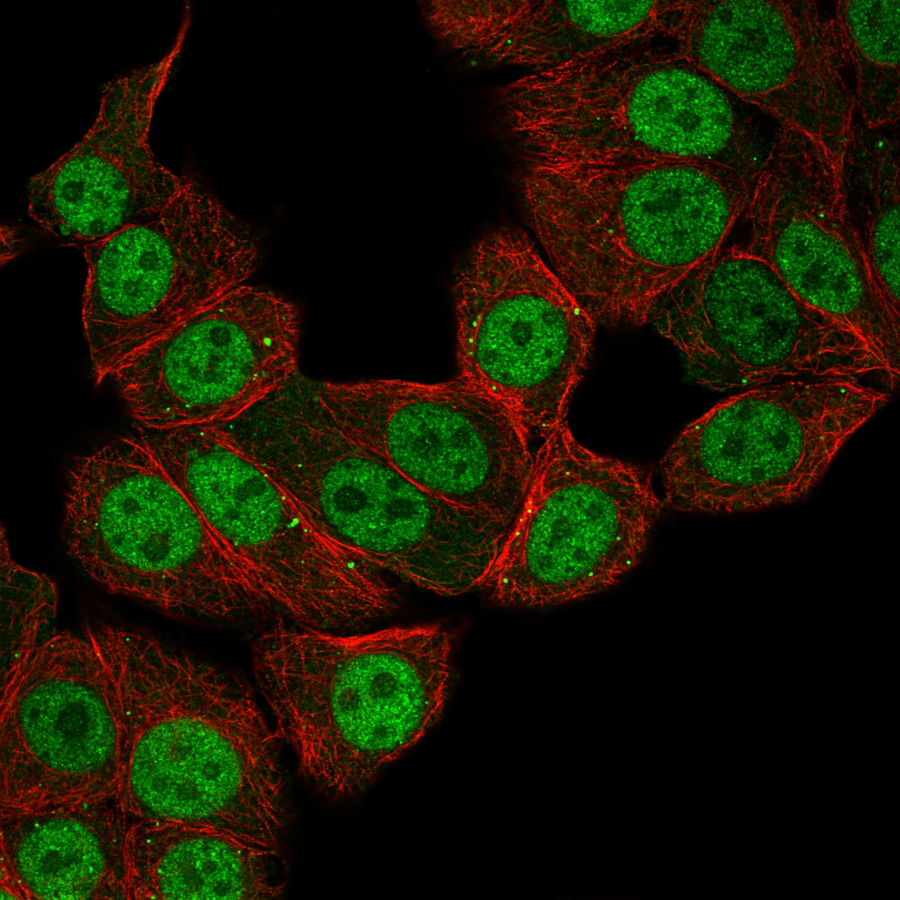
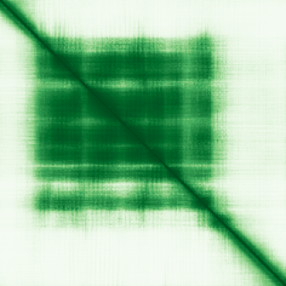

type: protein-evaluation gene: "CHCT1" date: 2026-06-01 tags: [protein-scout, nucleoplasm, evaluation] status: scored ---
CHCT1 核蛋白评估报告
1. 基本信息
| 项目 | 内容 |
|---|---|
| 基因名 | CHCT1 |
| 蛋白全名 | CHD1 helical C-terminal domain containing protein 1 |
| 蛋白大小 | 236 aa / ~27 kDa |
| UniProt ID | Q86WR6 |
2. 评分总览
| 维度 | 得分 | 权重 | 加权 | 证据摘要 |
|---|---|---|---|---|
| 核定位特异性 | 7/10 | ×4 | 28.0 | UniProt Nucleus ECO:0000269 + GO nucleus IDA:UniProtKB |
| 蛋白大小 | 8/10 | ×1 | 8.0 | 236 aa |
| 研究新颖性 | 10/10 | ×5 | 50.0 | PubMed strict=0 |
| 三维结构 | 5/10 | ×3 | 15.0 | pLDDT 68.1; 无 PDB |
| 调控结构域 | 4/10 | ×2 | 8.0 | CHD1 helical C-terminal domain (IPR025260) |
| PPI 网络 | 2/10 | ×3 | 6.0 | STRING 502 error; IntAct 0; UniProt 0 |
| 加权总分 | 115/180** | |||
| 互证加分 | +1.0 | ECO:0000269 + GO IDA | ||
| 归一化总分 (÷1.83) | 62.8/100** |
PubMed strict: 0
3. 核定位证据
| 来源 | 定位 | 可信度 |
|---|---|---|
| UniProt | Cytoplasm (ECO:0000250); Nucleus (ECO:0000269) | Experimental (nucleus) |
| GO-CC | cytoplasm IEA; nucleus IDA:UniProtKB | Direct assay |
| HPA IF | Nucleoplasm (main) | localization available |
HPA IF 数据: HPA subcellular localization available. Full red_green IF image acquired (293 KB).

HPA IF 状态: IF full acquired — HPA IF 原图 (red_green, 293 KB) 已获取。HPA 数据库包含 10 张 red_green IF 图像。UniProt 实验级 Nucleus 注释 + GO nucleus IDA 提供双源核定位证据。
4. 研究现状
| 指标 | 数值 |
|---|---|
| PubMed strict | 0 |
| PubMed broad | 0 |
CHCT1 无任何独立文献。PubMed strict=0 为本项目最新颖蛋白之一。蛋白功能完全未知，仅通过序列中含 CHD1 helical C-terminal domain 命名。
5. 三维结构
| 指标 | 数值 |
|---|---|
| AlphaFold pLDDT | 68.1 (mean) |
| pLDDT >90 | 9.3% |
| pLDDT 70-90 | 48.0% |
| pLDDT 50-70 | 22.3% |
| pLDDT <50 | 20.3% |
| PDB | 无实验结构 |
| InterPro | IPR039880, IPR025260 (CHD1 helical C-terminal) |

PAE: PAE 图像已获取。pLDDT 68.1，结构置信度中等。CHD1 helical C-terminal domain 功能未表征。
6. PPI 网络
| Partner | 来源 | Score/Evidence | 功能 |
|---|---|---|---|
| 无记录 | STRING | HTTP 502 error | — |
| 无记录 | IntAct | 0 entries | — |
| 无记录 | UniProt | 0 curated interactions | — |
PPI 网络完全为空。STRING 数据获取失败 (502)，IntAct 和 UniProt 均无互作记录。这是本项目中 PPI 信息最匮乏的蛋白之一。
7. 总体评价
CHCT1 是极新颖的核蛋白 (PubMed strict=0)，具有实验级核定位证据 (ECO:0000269 + GO IDA + HPA IF 原图)。主要弱项为 PPI 网络完全缺失、结构置信度中等 (pLDDT 68.1) 和功能完全未知。低-中置信度 nucleoplasm 候选 (63.4/100)。
PPI 网络
| Partner | Source | Score/Evidence |
|---|---|---|
| 无记录 | — | 0 entries |
HPA IF 图像已本地嵌入。
PAE 图像暂无数据（未生成本地图片或未可靠获取），结构判断基于AlphaFold pLDDT统计。